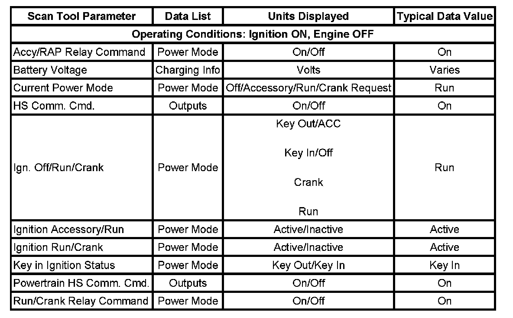

Scan Tool Data List
SCAN TOOL DATA LIST

Use the scan tool data display values and definitions information in order to assist in diagnosing vehicle malfunctions. Compare the vehicles actual scan tool data with the typical data display value table information. Use the information in order to aid in understanding the nature of the concern when the vehicle data does not match the typical data display values.
The scan tool data values were taken from a known good vehicle under the following conditions:
- The ignition switch is in the Run position.
- The engine is not running.
- The vehicle is in PARK.